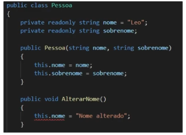
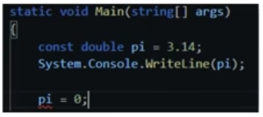

Professor Leonardo Buta
As aulas estão em:
Em Program.cs temos as aplicações de exemplos e comentários sobre os assuntos abordados nas aulas.
É um método especial que tem o objetivo de definir valores padrão para a classe no momento do seu instanciamento. Por padrão, toda classe em c# tem um construtor, caso o usuário não o utilize, o construtor será vazio (mas existirá).
Geralmente os construtores tem o mesmo nome da classe. Sua declaração é o modificador de acesso seguido pelo nome.
Uma classe pode ter diversos construtores, sendo que se forem homônimos devem ter parâmetros diferentes. Isso se dá pela característica do c# permitir uma sobrecarga de métodos.
Ao passarmos um construtor para um classe, os objetos que a instanciarem obrigatoriamente devem utilizar esse construtor. Se não passarmos nenhum construtor será utilizado o construtor padrão, definido pela própria linguagem e que é vazio.
Um tipo de construtor que impossibilita de fazer uma instancia de um objeto desta classe pelo lado de fora, ou seja, só podemos instanciar essa classe a partir de métodos internos da própria classe. Para definir um construtor privado, nós colocamos o modificador de acesso private para definir o construtor. Muito utilizado no padrão de projetos singleton.
Para instanciar um objeto com construtor privado nós temos que colocar um método na classe que faça essa instância internamente na classe. Para usar o método de uma classe sem instanciá-la nós devemos escrever Classe.Metodo().
No exemplo o professor abstraiu um sistema de log, onde cada log emitido utiliza a classe de log, mas utiliza a mesma instancia do objeto. Isso evita que cada log crie uma nova instancia da Classe e assim sobrecarregue a memória desnecessáriamente. Nesse padrão de projeto, os logs são para um mesmo usuário.
Para herdar uma classe que possui construtor definido nós temos que definir na classe filha um construtor igual à classe mãe e também definir que serão passados os parâmetros construtores para a classe mãe, assim como no exemplo. Podemos criar parâmetros a mais para a classe filha.
Os métodos getters e setters servem para incluir validações e controle à atribuição de valores às variáveis do objeto ou mesmo controlando o seu retorno.
São a unificação dos getters e setters. Se no programa nós igualarmos a propriedade a algum valor, nós estaremos chamando o set, caso contrário nós estaremos chamando o get.
É um moficador de acesso que indica que um atributo só pode ser modificado a partir do construtor ou em sua inicialização. Ex:
Pode-se perceber pelo exemplo que o this.nome do método AlterarNome() está assinalado como erro, uma vez que está tentando fazer a altação do atributo "nome" que foi definido como somente leitura e só pode ser definido pelo construtor ou diretamente na sua declaração.
É igual à constantes no javascript, não se pode fazer alterações desse valor depois de definido. Ex:
É obrigatória a atribuição de um valor na declaração de uma constante.
Os exemplos de delegate estão em Classe Calculadora e Program.cs
É uma maneira de passar um método como referência, podendo ser usado como callback, aceitando qualquer método que contenha a mesma assinatura do delegate. Essa passagem do método é feita no Main do Program.cs
É uma extensão do delegate, onde podemos chamar vários métodos em sequencia em uma mesma chamada do delegate.
É um mecanismo de comunicação entre objetos, um evento ocorre quando outra ação ocorre. Eventos trabalham com delegates para executar suas funções. A palavra chave do evento é "event".
A sintaxe é
<modificador de acesso> <tipo(de acordo com os métodos associados)> <event> < nome do delegate associado > < nome do evento >
É proposto pelo professor o aprofundamento nos conhecimentos a partir do estudo dos tópidcos de construtores, delegates e eventos, modificadores e propriedades. As referências de estudo são sobremaneira o site c-sharpcorner e o tutlane